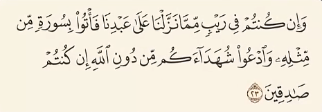
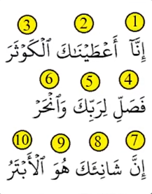
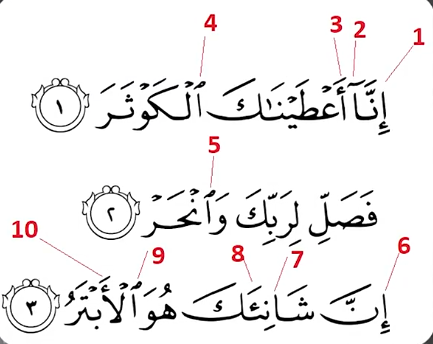
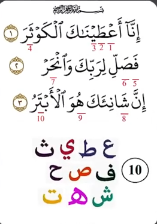
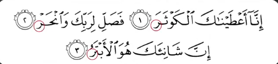
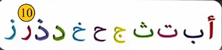
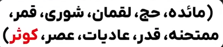
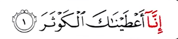
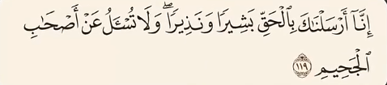

جواب
خب بیاید ببینم معنی این جمله که گفت چی میشه
و اذا مستکم المعصمات هل عمل هو الملل الذی لایخی
ترجمه (و هرگاه شما را دستبندها لمس کنند، آیا این کار همان ملالی نیست
که پایان نمییابد)
حالا واضحاً این جمله نه دستور زبانی درست داره، نه معنای منسجم، بیشتر
شبیه جملهایه که یک موتور ترجمهی خراب یا هوش مصنوعی خوابآلود ساخته
😅
چتجیپیتی یا هر هوش مصنوعی دیگه صرفاً ابزاری هست که بر اساس پایگاه
دادههایی که بهش دسترسی داره، جستجو میکنه و با الگوریتمها نتایجی
ترکیبی تولید میکنه. پس نمیشه به عنوان مرجع قابل اعتماد در نظرش گرفت.
و بعدشم، در هیچ جای قرآن گفته نشده "یک آیه بیارید" بلکه خدا میگه:
اگر در آنچه بر بندگان خدا نازل شده در شک هستید، سورهای همانند
سورههای قرآن بیاورید.
که از نظر بلاغت ، ساختار ادبی و عمق معنی مثل آیات قرآن باشه

خب بیاید کوچکترین سوره قرآن رو در نظر بگیریم که حتی دو خط هم نمیشه:
سوره کوثر
این سوره ۱۰ کلمه داره

و هر آیه از ۱۰ نوع حرف الفبا ساخته شده

بیشترین حرف تکراری الف هست که ۱۰ بار تکرار شده

توی این سوره ۱۰ نوع حرف فقط یک بار تکرار شده

همه آیات این سوره با حرف «ر» ختم میشن


این سوره با حرف «ر» تموم میشه که فقط ۱۰ سوره قرآن اینطوریاند

و دهمینش سوره کوثره

این سوره با کلمه «إنا» شروع میشه و اولین آیه در قرآن که با «إنا» شروع
میشه ۱۰ کلمه داره


این سوره درباره نحر و قربانی کردنه، که مسلمانان در ۱۰ ذیالحجه قربانی
میکنن. با اینکه کوچکترین سوره قرآنه ولی اعجازش انسان رو به یقین
میرسونه.